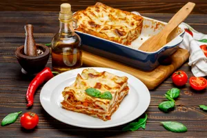

Lasagna
Home

Lasaña, plato de pasta de origen italiano, elaborado con fideos anchos a menudo con volantes y una salsa de
tomate o blanco.
Ingredientes
- 4 1 cucharada de aceite (14 g)
- 1 diente de ajo pelado y finamente picado (3 g)
- 1 pimentón rojo sin semilla y cortado en cubos pequeños (120 g)
- 1 cebolla cabezona blanca, finamente picada (80 g)
- 2 tomates rojos medianos sin piel, finamente picados (240 g)
- 1 sobre de CALDO CON COSTILLA MAGGI® DESMENUZADO (9 g)
- 1 libra de carne molida magra (500 g)
- 1 1/2 tazas de agua (375 ml)
- /2 caja de pasta para lasaña precocida (250 g)
- 8 lonjas de queso mozzarella (136 g)
- 1 sobre de BASE PARA SALSA(50g)
- 1 taza de leche (250 ml)
- 1 taza de agua (250 ml)
- 4 cucharadas de queso parmesano rallado (20 g)
Intrucciones
- 1.Precalienta el horno a 180°C/ 360°F 30 minutos antes de la preparación.
- 2.Calienta el aceite en una sartén a fuego medio durante 3 minutos; luego sofríe el ajo, el pimentón, la
cebolla y el tomate. Añade el sobre de CALDO CON COSTILLA MAGGI® DESMENUZADO y cocina por 2 minutos.
Adiciona la carne y sofríe por 5 minutos sin dejar de remover, luego agrega el agua hasta que hierva y la
carne se cocine.
- 3.Retira del fuego y reserva hasta el momento de usar
- 4.Pasa la pasta para lasaña por agua tibia con el fin de que no se parta en el momento de armarla.
- 5.Disuelve el contenido del sobre de BASE PARA SALSA BECHAMEL MAGGI® en una taza de agua fría y una taza de
leche, mezcla hasta disolver bien. Lleva a fuego medio en una olla por 5 minutos sin dejar de remover, hasta
que hierva y espese. Retira del fuego.
- 6.Pon en el fondo de la refractaria o molde una cama de carne, encima las láminas de pasta, la mitad de la
salsa y una cama de queso mozzarella. Repite estos pasos hasta terminar los ingredientes, asegurando que la
última capa sea de pasta y salsa. Por último, espolvorea el queso parmesano encima.
- 7.Lleva la refractaria o molde al horno y déjala por 10 a 15 minutos aproximadamente o hasta gratinar.
- 8.Retira del horno y sirve